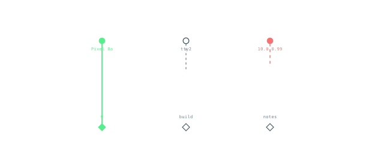
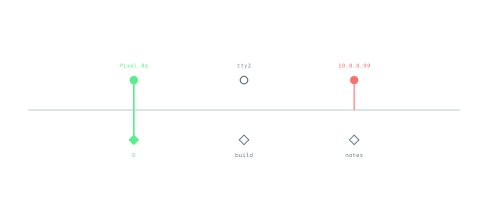
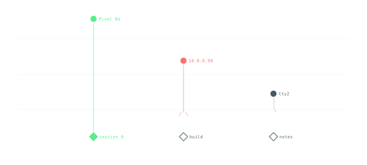
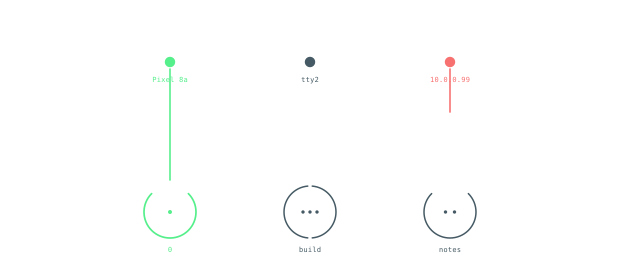
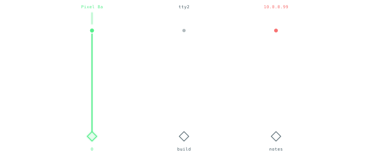

Five minimal objects. No frames, no headers, no legends inside the art. Every line is a route, every dot is an endpoint, every color is a state. Like the billing diamond, the geometry is the data.
green filled linked · slate hollow idle or open · red unresolved top dots are ingress origins, bottom diamonds are tmux destinations, vertical is the route

HarpThe simplest possible map. Taut green for a live link, dim stub for idle, broken red stub for unresolved. Length is connectivity, not decoration.DOT = ORIGIN / DIAMOND = SESSION / LINE = ROUTE

HorizonOne horizontal is the boundary. A live route pierces it. An unresolved identity stops at it and cannot cross. The surface is the trust model.LINE CROSSES = VERIFIED / STOPS AT LINE = UNRESOLVED

DriftHeight is freshness. Fresh stays high, stale sinks. The link sags with it. Time becomes position without a clock.HEIGHT = RECENCY / SINKING = STALENESS

NucleusEach session is a ring. Arc segments are windows, ticks are panes. The route is a spoke. Structure is visible without text.ARCS = WINDOWS / TICKS = PANES / SPOKE = ATTACHMENT

EchoA live route glows. The faint ghost above the dot is its recent past. No history, no glow. The cloud is memory.GLOW = HISTORY / GHOST = RECENT PAST
Mock data in every object: Pixel 8a → session 0 is linked, tty2 is idle with no session, 10.0.0.99 is an unresolved remote with no Tailscale identity. Open sessions (build, notes) are hollow. No mockup contains a title, legend, or frame — the page is the only chrome. Open in Firefox: file://docs/session-mockups/patch-bay-concept-gallery.html